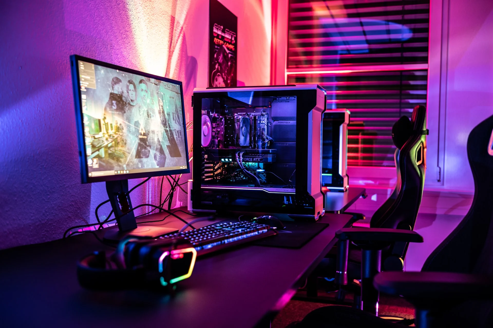

Gaming
Waarom ik van gamen houd

Gamen is voor mij niet alleen ontspanning, maar ook een manier om mezelf uit te dagen en strategisch te denken. Het dompelt me onder in nieuwe werelden en geeft me de kans om problemen op creatieve manieren op te lossen. Elk spel brengt iets nieuws, of het nu gaat om tactiek, snelheid of samenwerken.